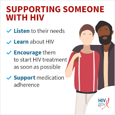

HIV is a commonly misunderstood virus that has many misconceptions and myths surrounding it. As such, it is very important for knowledge
and awareness be spread among the wider community in order to avoid unnecessary panic and discrimination towards those living with the virus.
The fact is that HIV is among us and that people in our community are living healthy and long lives with the virus but more work of spreading awareness
of the virus needs to be done not only to reduce its spread but to also reduce the stigma towards those living with HIV. The human body can’t get rid of HIV and no effective HIV cure currently exists. So, once you have HIV, you have it for life.
Luckily, however, effective treatment with HIV medicine called antiretroviral therapy (ART) is available.
If taken as prescribed, HIV medicine can reduce the amount of HIV in the blood (the viral load) to a very low level. This is called viral suppression. If a person’s viral load is so low that a standard lab can’t detect it, this is called having an undetectable viral load. People living with HIV who take HIV medicine as prescribed and get and keep an undetectable viral load can live long and healthy lives and will not transmit HIV to their HIV-negative partners through sex.
That is U=U, Undetectable=Untransmittable.
For more info, kindly visit this official website by the Department of Health of the Federal U.S. Government.

Ways by which HIV can be transmitted